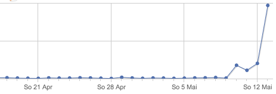

Heiß & fettig: Wir gewinnen CSS Awards.
Wir gewinnen gerade ein paar Titel in der online CSS-Szene. Immer wenn eine Mail für einen Sieg oder eine Nominierung rein kommt, gibt´s nen Clap und die Überlegung ein Bier aufzumachen. Vielen Dank an alle die gevoted haben. Hier eine Liste der bisherigen Auszeichnungen.
WOOP WOOP. Völlig geil ist, dass wir davon nicht mal die Hälfte bei den Galerien eingereicht haben, sondern irgendwelche herrlichen Menschen dies für uns taten. Jetzt noch den „Awwwards – Site of the day“ und ich kann in Frieden sterben…
Jetzt aber die Liste:
- CSS Design Award – Winner (12 Mai 2013)
- Awwwards – Site of the day (24 Mai 2013)
- CSS Light – Featured of the Day (14 Mai 2013)
- CSS Winner – Winner of the day (12 Mai 2013)
- CSS Reel – Winner of the Day (14 Mai 2013)
- CSS Awards – Featured (20 Mai 2013)
- Design Beep – Weekly Web Design Inspiration (#116)
- Make Better Websites (13 Mai 2013)
- Html Inspiration (13 Mai 2013)
- CSS Mania (12 Mai 2013)
- qnt gallery – web design inspiration (13 Mai 2013)
- VK Best Webdesign (12 Mai 2013)
- CSS Downunder (11 Mai 2013)
- The Design Inspiration (13 Mai 2013)
- French Design Index – Nominee (14 Mai 2013)
Unsere Stats danken uns die Aufnahme auch :)

Vielen herrlichen Dank an alle die gevoted haben. Ultraturbotittengeil.